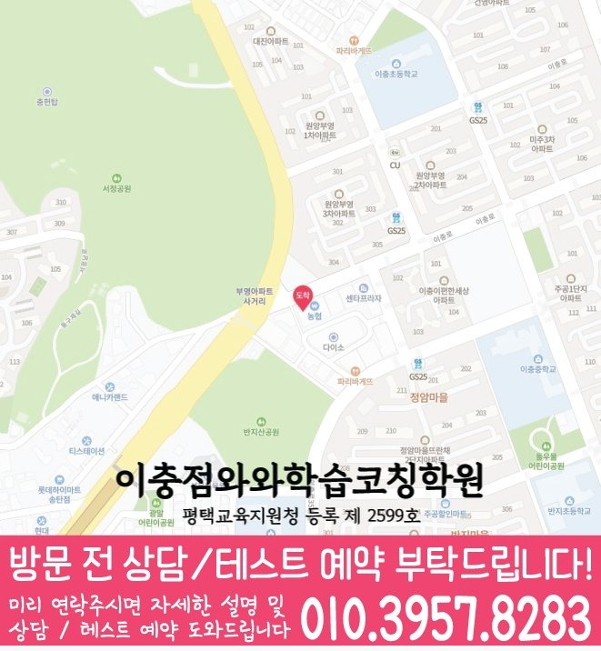

Middle school Korean · English · Math
서정동 중학생 국영수학원
서정동 중학생 국영수학원 선택 전 중등 내신 자료, 최근 오답과 과목별 가능 학년, 센터 위치·비용 확인 기준을 안내합니다.
01 Quick answer
서정동에서 먼저 확인할 내용
서정동에서 중학생 국영수학원을 찾는다면 와와학습코칭센터 이충점의 과목별 가능 학년을 먼저 확인하세요. 제공된 중학교 참고 자료와 학생의 실제 교재를 대조하고, 학생의 실제 풀이 기록에 맞게 과목별로 무엇을 먼저 보완할지 정하는 순서가 필요합니다.
대표 학생 상황
세 과목의 과제 순서와 오답 복습 시점을 스스로 정리하기 어려운 중학생


010-6839-8283상담 전 핵심 안내
서정동에서 중학생 영어·수학을 중심으로 국어와 영수까지 함께 준비하는 학생을 위한 학습 흐름을 안내합니다. 지역 센터는 진단을 바탕으로 개념을 탄탄히 만들고, 유형별 문제풀이와 오답 관리를 통해 학습 변화가 기록에 남는지 확인합니다. 서정동 중학생 국영수학원을 찾는 학부모님이라면 세 과목을 한꺼번에 맡길 수 있는지보다, 우리 아이의 약점이 과목별로 분리되어 관리되는지를 먼저 보시면 좋습니다. 서정동 중학생 상담에서는 가정에서 가능한 공부 시간을 학교 일정과 대조해 실행 가능한 분량을 정합니다.
과목 계획을 세우기 전에 볼 기준
학습 진단 후 맞춤 로드맵. 단원 이해도, 풀이 습관, 자주 틀리는 유형을 먼저 확인해 학생별로 필요한 학습 순서를 설계합니다.
영어·수학 균형 학습(영수). 영어는 문법·독해·어휘를 연결하고, 수학은 개념·유형·오답 원인을 분리해 단계별로 관리합니다.
경기도 평택시 서정동 중학생 상담에서는 국어 지문 표시 습관, 영어 단어 누적 방식, 수학 풀이 노트의 빈칸을 각각 확인해야 최근 평가 기록도 실제 학습 계획에 반영할 수 있습니다. 같은 실행 문제를 보이는 학생은 바로 선행을 늘리기보다 지금 틀리는 유형을 말로 설명하고, 다음 과제에서 같은 오류가 줄어드는지를 확인하는 흐름이 적합합니다. 이 학습 문제를 중심으로 서정동 상담의 진행 흐름을 살펴봅니다. 기초 확인형 관점으로 보면 첫 단계에서는 성적표만 보기보다 최근 오답과 실제 공부 시간을 함께 살펴야 합니다. 서정동에서 중학생의 현재 상태는 몰라서 틀린 문제와 알고도 실수한 문제를 따로 기록해 살펴야 합니다.
수업 안팎의 학습 태도를 살피는 방법
설명보다 ‘이해’가 먼저입니다. 학생이 막히는 지점을 질문과 풀이 과정으로 찾아 개념을 다시 연결해 스스로 풀 수 있게 돕습니다.
수업 후 학습 태도까지 점검. 서정동 다음 학습 단계에서는 최근 풀이 기록을 바탕으로 설명할 수 있는 범위를 확인합니다.
서정동의 이 학습 장면에 해당하는 학생에게는 같은 시간표 안에서도 국어 독해, 영어 문장 해석, 수학 풀이 과정이 서로 다른 속도로 조정되어야 합니다. 최근 평가 기록을 상담 주제로 함께 확인하면 서정동 학생의 수업 참여, 과제 흐름, 복습 주기를 생활 리듬에 맞춰 판단하기가 수월합니다. 서정동 중학생에게는 현재 학습 상태를 읽고 다음 주에 바꿀 행동을 정하는 과정이 필요합니다. 서정동 수업을 비교할 때는 과목별 오답 원인과 피드백이 구분되는지가 중요합니다.
서정동 중학교 참고 자료를 상담에 활용하는 기준
가정에서 기록을 준비하면, 서정동 중학교 참고 정보에는 효명중·이충중·은혜중이 포함됩니다. 확인 순서를 세울 때, 학교명만으로 수업 가능 여부를 판단하지 않고 센터의 현재 개설 범위를 함께 확인해야 합니다.
학교 자료를 대조할 때, 시험 범위표·학교 프린트·수행평가 일정 자료를 준비한 뒤 국어의 읽기 근거, 영어의 문장 적용과 수학의 풀이 과정을 따로 확인하세요. 학생 자료를 먼저 펼쳐 보면, 서정동 상담에서는 이 기록이 과목별 우선순위로 이어지는지가 핵심입니다.
진단에서 재확인까지의 학습 순서
1. 현재 수준 확인. 학년, 학교 진도, 최근 시험 결과와 오답 데이터를 바탕으로 취약 단원과 자주 틀리는 유형을 파악합니다.
2. 개념 정리와 유형 학습. 바로 문제풀이로 들어가기보다 핵심 개념을 정리한 뒤, 기본→표준→응용 순으로 단계별로 연습합니다.
3. 오답 관리와 학습 피드백. 틀린 이유를 ‘개념 부족/계산 실수/독해 오류/풀이 방법’처럼 분류해 다음에 같은 실수를 반복하지 않게 지도합니다.
중학생의 경우 같은 위치를 기준으로 평일과 시험 기간의 등원 가능 시각을 각각 확인해야 합니다. 최근 평가 기록 설명은 등록을 서두르기 위한 문구가 아니라 수업 지속성, 보충 방식, 학부모 소통 범위를 확인하는 질문으로 활용하는 편이 바람직합니다. 중등 국어·영어·수학 관리 기준 상담 전에는 최근 시험지, 틀린 문제 표시, 학교 과제 일정, 자녀가 어려워한 단원 이름을 간단히 적어 가면 답변이 훨씬 구체적입니다. 서정동 학부모는 세 과목의 가능 여부와 함께 자녀의 우선 보완 순서를 확인하세요.
학년 변화에 따라 달라지는 점검 항목
중1. 영어는 기초 문법과 독해 흐름을 잡고, 수학은 개념 기반 풀이 습관을 만듭니다. 학교 진도에 맞춰 기본 유형부터 반복 점검하며 내신 바탕을 탄탄히 합니다.
중2. 서정동 학습 점검에서는 학습 시간 배분을 바탕으로 설명할 수 있는 범위를 확인합니다. 시험 대비를 위해 반복해 틀린 유형과 오답 패턴을 집중적으로 관리합니다.
중3. 서정동 수업 계획에서는 복습 이력을 바탕으로 다음 학습 계획을 조정합니다. 약한 단원, 시간 관리, 오답 반복 요인을 우선순위로 두고 보완 학습을 진행합니다.
영수·국어 보강(선택). 영수는 영어 독해/문법과 수학 유형 학습을 연결해 학습 변화 시간 배분을 조정합니다. 서정동 수업 계획에서는 단원별 이해도를 바탕으로 다음 학습 계획을 조정합니다.
서정동 중학생학원으로 영어·수학(영수) 중심 학습이 필요하다면 지역 센터가 도와드립니다. 상담을 통해 현재 수준을 진단하고, 시험과 학교 진도에 맞춘 학습 방향을 자세히 정리합니다.
02 Consultation examples
서정동 학부모 상담 상황 예시
아래 내용은 실제 고객 후기나 성적 결과가 아니라, 상담에서 확인할 질문을 이해하기 위한 상황 예시입니다.
최근 학교 학습 준비가 한 과목에 치우친 서정동 중학생을 가정했습니다. 학부모는 현재 교재와 학교 자료를 바탕으로 국어·영어·수학의 병목을 따로 듣고, 가정에서 확인할 기록을 정리합니다.
서정동에서 제공된 중학교 참고 정보인 효명중·이충중·은혜중의 목록과 학생의 실제 학교 자료를 대조해 질문하는 상황입니다. 학부모는 학교명 자체보다 시험 범위와 수행평가 일정이 수업 계획에 반영되는지, 다음 확인 시점이 언제인지 기록합니다.
03 FAQ
서정동 중학생 국영수학원 자주 묻는 질문
학부모님이 상담 전에 자주 확인하는 내용을 질문과 답변으로 정리했습니다.
서정동 중학생 국영수학원이 필요한지 어떤 기록으로 판단하나요?
과제를 끝낸 뒤 오답 복습이 이어지지 않는다면 최근 시험지와 교재에서 막힌 지점을 과목별로 나누어 보세요. 서정동 상담에서는 학교 일정과 주간 실행 시간도 함께 확인합니다.
서정동 중학생이 국어·영어·수학을 함께 관리할 때 무엇을 구분해야 하나요?
서정동 상담에서는 한 과목의 과제가 다른 과목 복습을 밀어내지 않도록 최소 유지량과 집중 과목을 구분합니다. 국어·영어·수학의 오답 원인이 다르므로 재학습 방법과 확인 날짜도 과목별로 정해야 합니다.
서정동 학교별 교과 자료는 어떤 방식으로 확인하나요?
효명중·이충중·은혜중 등은 제공 자료의 중학교 참고 목록입니다. 학생이 가져온 시험 범위표·학교 프린트·수행평가 일정 자료를 대조하고 희망 센터의 과목·학년 운영 여부를 별도로 확인하세요.
서정동 학원 상담에서 수업 가능 학년과 비용을 어떻게 확인하나요?
서정동 상담 전에는 실제 방문 위치를 위 센터 확인 정보에서 확인할 수 있습니다. 센터별 교습비 확인 버튼에서 제공 자료를 볼 수 있습니다. 마지막으로 개설 과목, 가능 학년과 통학 가능한 수업 시각을 기록해 비교하세요.
04 Continue
서정동 페이지 이동
카테고리 전체 지역 또는 앞뒤 지역 안내로 이동할 수 있습니다.